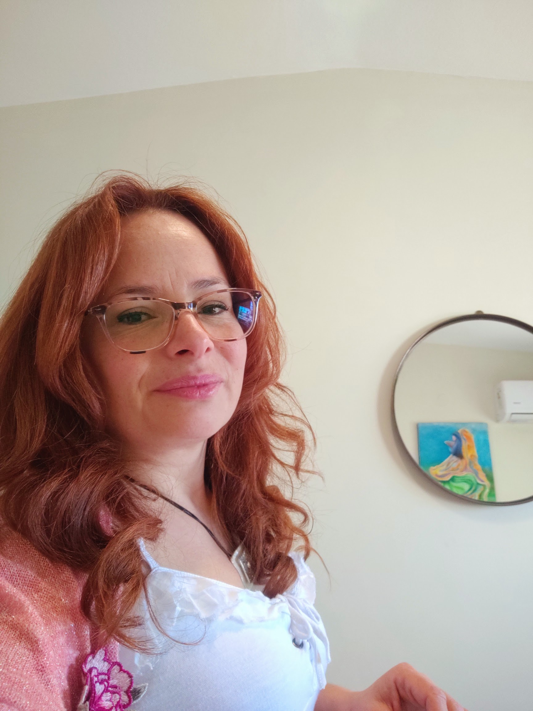

Psicoterapia individual
Un espacio de escucha para explorar emociones, dificultades, vínculos y situaciones que generan malestar, y desarrollar recursos para la vida cotidiana.
Psicología · Córdoba Capital · Online
Soy Noelia Toranzo, Licenciada en Psicología. Acompaño procesos personales y familiares desde una mirada integral, respetuosa y atenta a la singularidad de cada persona.
Atención presencial en Córdoba Capital y modalidad online.

Sobre mí
Entiendo la terapia como un espacio de encuentro en el que cada persona puede explorar lo que le sucede, reconocer sus recursos y encontrar nuevas maneras de afrontar las dificultades.
Mi trabajo integra la práctica clínica y la experiencia en el ámbito educativo. También acompaño a familias que necesitan orientación ante preguntas vinculadas con la crianza, el desarrollo y las necesidades particulares de niños y adolescentes.
El abordaje se construye de manera singular, teniendo en cuenta la historia, el contexto y los objetivos de cada consulta.
¿En qué puedo acompañarte?
Atención psicológica con un enfoque personalizado, de acuerdo con las necesidades y el momento vital de cada persona.
Un espacio de escucha para explorar emociones, dificultades, vínculos y situaciones que generan malestar, y desarrollar recursos para la vida cotidiana.
Un espacio para trabajar sobre la autoestima, las relaciones, los cambios propios de esta etapa y las dificultades que puedan aparecer en la vida personal o escolar.
Acompañamiento ante inquietudes relacionadas con la crianza, el desarrollo y las necesidades de niños y adolescentes, incluidas consultas vinculadas con TEA y TDAH.
Una mirada que considera los aspectos emocionales, vinculares y educativos, favoreciendo el trabajo articulado cuando la situación lo requiere.
La pertinencia de cada modalidad de atención se evalúa según el motivo de consulta y las necesidades de cada caso.
Mi mirada
No hay dos procesos iguales. Por eso, el trabajo terapéutico parte de la escucha, la construcción de confianza y la búsqueda conjunta de herramientas que tengan sentido para cada persona.
El objetivo es ofrecer un espacio profesional donde sea posible poner en palabras lo que sucede, comprender patrones y explorar alternativas para afrontar los desafíos cotidianos.
Dónde y cómo atenderte
Podés consultar por la modalidad que mejor se adapte a tu situación y coordinar un primer encuentro.
La atención presencial se realiza en La Casita Terapéutica, en Córdoba Capital.
Santiago Costamagna 6841
Córdoba, Córdoba, Argentina
También trabajo en modalidad online. Esta opción permite realizar los encuentros a distancia, desde un espacio privado y tranquilo.
Consultar por sesiones online →La atención presencial se coordina previamente. Consultá disponibilidad y horarios antes de acercarte.
Contacto
Si querés conocer las modalidades de atención o consultar disponibilidad, podés comunicarte por los siguientes medios.
Lic. Noelia Elizabeth Toranzo
Psicóloga · MP 9058
lic.noeliatoranzo@hotmail.com 03547-15501077 Ver ubicación